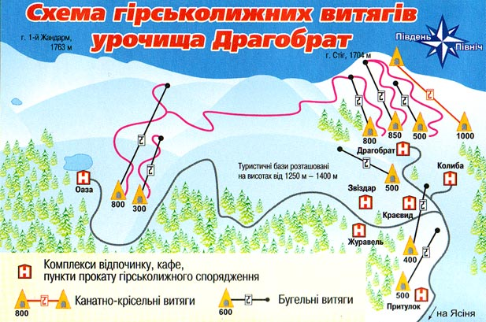
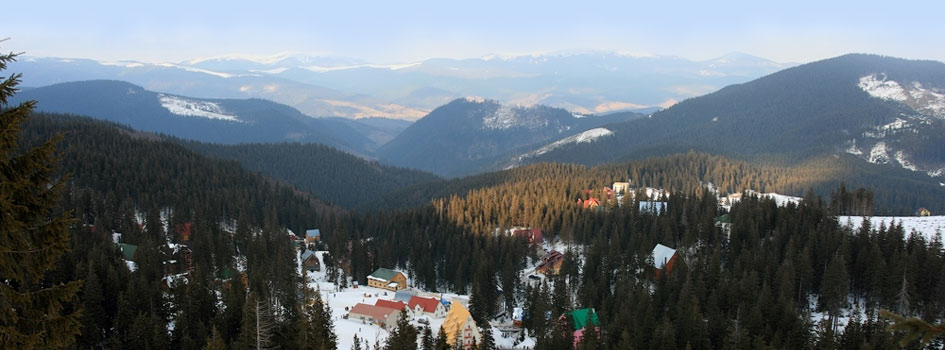
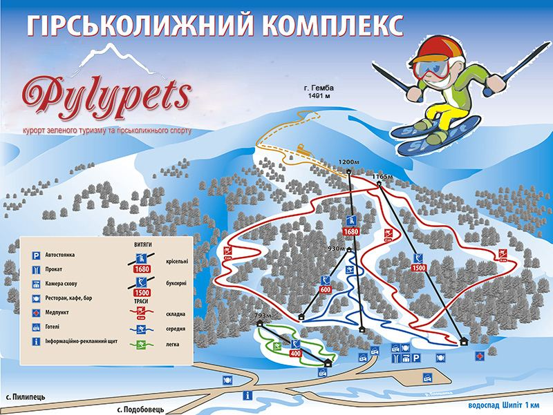
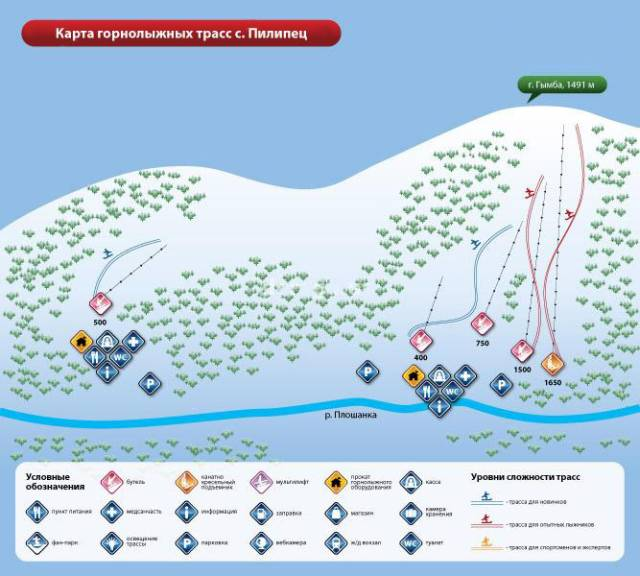
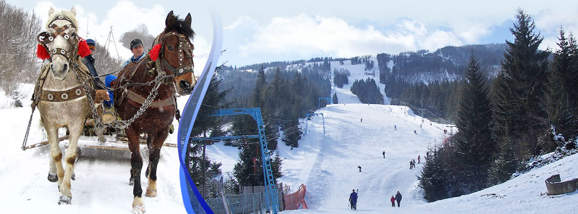
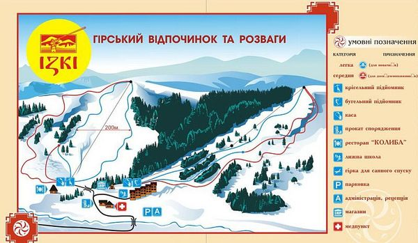
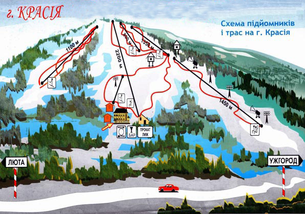
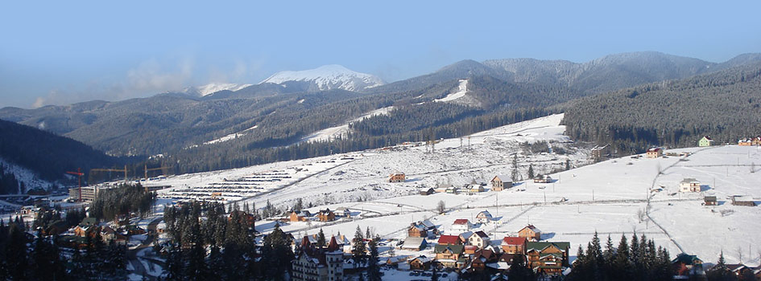

Гірськолижні курорти Закарпаття
Драгобрат Закарпатська область (Карпати)
Драгобрат
– найвисокогірніша гірськолижна база України. Вона знаходиться на висоті 1400 м над рівнем
моря.
Таке розміщення гірськолижного курорту Драгобрат гарантує зберігання снігового покриву до
глибокої весни. Чудові краєвиди, відірваність від цивілізації, позатрасове катання,
можливість
покататись взимку та навесні приваблює багатьох відпочиваючих.
Відстані:
Івано-Франківськ – 140 км.
Спуски:
500-1200 м, декілька трас різного рівня складності.
Підйомники:
4 бугеля, будівництво крісельного підйомника.
Облаштування спусків:
ратрак, освітлення.
Як доїхати:
Івано-Франківськ – Яремче – Ясиня – Драгобрат.
Маршруткою, дизель-поїздом, автомобілем через Яремче до села Ясиня, далі автомобілем УАЗ
або
ГАЗ-66.
Відпочинок в Драгобраті на гірськолижному курорті в Карпатах, ціни 2022
Розташування - фрірайдом по бездоріжжю
Назву гірськолижному карпатському курорту Драгобрат дало одноіменне урочище.
Драгобрат є
найвищим гірськолижним курортом в Україні. Він розташований на висоті 1300 - 1400 м над
рівнем
моря серед підковоподібного масиву гір Свидовець. Таке георафічне розміщення забезпечує
стабільне снігове покриття на схилах гір, які оточують урочище. Сніг тут може лежати з
листопада
по травень місяць.
Драгобрат знаходиться на межі хвойних лісів. Вище розпочинається альпійська зона та гірський
масив. Звідси відкриваються гарні краєвиди на гори Чорногору та Горгани. Тут можна побачити
вершини Говерли, Петроса, Довбушанки, Синяка та інших гір Українських Карпат. Драгобрат
розташований за 18 км від селища Ясіня Закарпатської області та за 9 км від автомобільної
траси
Ужгород - Івано-Франківськ.
На курорт Драгобрат ведуть гірські дороги, стан яких дозволяє проїхати лише автомобілям з
повним приводом. Тому трансфер з Ясіні здійснюється переважно популярними в цій місцевості
колишніми військовими всюдиходами УАЗ та ГАЗ-66. Якість доріг на гірськолижний курорт Драгобрат 2022 сезону залишається без змін.
Відпочинок та проживання на курорті Драгобрат 2022 – бази відпочинку, готелі, приватний
сектор в Драгобраті.
В Драгобраті можна зупинитись в базах відпочинку та готелях, розташованих неподалік витягів.
Драгобрат, ціни 2022 на житло
На курорті Драгобрат ціни 2022 на житло розпочинаються від 600 грн за двомісний номер в
низький сезон, від 800 грн за 2-місний номер в високий сезон.
Драгобрат готелі
- Міні-готель "Яремина хатина"
- Готель "Скеля"
- Готель "Хата Звіздарюка"("Пролісок")
- Приватна садиба "Калина"
- Міні-готель "Стара фортеця"
- Готель "Казка Карпат"
- Готель "Маріна"
- Садиба "Freerider"
Основні лижні траси курорту Драгобрат
Траси гірськолижного курорту Драгобрат прокладені на пологих, без різких перепадів висот
схилах гір Стіг та Жандарм. Кути нахилу схилів становлять 12...19°. Траси в Драгобраті
розраховані як на професіоналів, так і на новачків. Для фрістайлу побудовані траси
міжнародного класу.
Драгобрат траси, характеристика

- перепад висот – близько 500 метрів;
- класифікація трас – сині, червоні, чорні;
- довжина трас від 300 до 2000 км;
- підйомники – від 200 до 1500 м, бугельні, крісельний, мультиліфт (навчальний);
- освітлення трас немає;
- ратрак є;
- траси для фрістайла - є.
Курорт Драгобрат - прокат спорядження, ціни 2022
Вартість прокату лиж та сноубордів в Драгобраті, ціни – 80-200 грн.
До послуг відпочиваючих
- автостоянка в смт. Ясіня;
- прокат спорядження;
- медпункт;
- лижна школа та послуги інструктора;
- снігоходи;
- квадроцикли;
- фрі-райд тури;
- снігоходи;
- ski-тури на ратраку;
- прокат санок.
Населені пункти біля Драгобрату та гірськолижні курорти Карпат
- Ясіня - 18 км;
- Рахів - 42 км;
- Ворохта - 38 км;
- Поляниця, Буковель - 38 км;
- Яблуниця - 30 км;
- Яремче - 52 км.
Драгобрат, як доїхати
Доїхати на Драгобрат можна через Ясіню. Більшість туристів на відпочинок в Драгобрат
потрапляють через Івано-Франківськ. Потягом потрібно їхати в напрямку Івано-Франківська, далі
на таксі або маршрутному таксі з Івано-Франківська до смт. Ясіня.
Інший варіант - через Львів, далі на Ясіню. Через населений пункт Ясіня проходить потяг сполученням Львів - Рахів. Власним автомобілем - Івано-Франківськ, Надвірна, Яремче, Яблуниця, Лазещина до селища Ясіня.
Інший варіант - через Львів, далі на Ясіню. Через населений пункт Ясіня проходить потяг сполученням Львів - Рахів. Власним автомобілем - Івано-Франківськ, Надвірна, Яремче, Яблуниця, Лазещина до селища Ясіня.
Трансфер на Драгобрат - таксі, транспортні послуги, екскурсії
Трансфер на Драгобрат від "Карпати Експрес" - +38-097-087-04-73, +38-093-245-76-96
Детальніше про подорожі та ціни на трансфер на сторінці - Трансфер на Драгобрат від "Карпати Експрес"
Трансфер на Драгобрат від "Трансфер до Карпат" - +38-066-954-96-66, +38-097-904-96-66
Детальніше про екскурсії та ціни на трансфер на сторінці - Трансфер на Драгобрат від "Трансфер до Карпат"
Трансфер на Драгобрат від "Carpathians Trip" - +38-067 763-29-86
Детальніше про подорожі по Карпатам, ціни на трансфер - Драгобрат, трансфер, подорожі "Carpathians Trip"
Трансфер на Драгобрат від "CARPATHIAN TRANSFER" - +38-068 064-91-71
Докладніше про трансфер Ясіня-Драгобрат та ціни на перевезення на сторінці - Машина на Драгобрат , трансфер, ціни "CARPATHIAN TRANSFER"
Детальніше про подорожі та ціни на трансфер на сторінці - Трансфер на Драгобрат від "Карпати Експрес"
Трансфер на Драгобрат від "Трансфер до Карпат" - +38-066-954-96-66, +38-097-904-96-66
Детальніше про екскурсії та ціни на трансфер на сторінці - Трансфер на Драгобрат від "Трансфер до Карпат"
Трансфер на Драгобрат від "Carpathians Trip" - +38-067 763-29-86
Детальніше про подорожі по Карпатам, ціни на трансфер - Драгобрат, трансфер, подорожі "Carpathians Trip"
Трансфер на Драгобрат від "CARPATHIAN TRANSFER" - +38-068 064-91-71
Докладніше про трансфер Ясіня-Драгобрат та ціни на перевезення на сторінці - Машина на Драгобрат , трансфер, ціни "CARPATHIAN TRANSFER"
Драгобрат, відкриття сезону 2021-2022, початок роботи підйомників
На курорті Драгобрат відкриття сезону 2021-2022 відбудеться 5-10 грудня.
- Карпатська чайка відкривають сезон 5 грудня.
- Вершина Карпат починає працювати 6 грудня.
- ОАЗА Драгобрат розпочинає сезон із 10 грудня.
- ГК Драгобрат (ВЛ1000 та Допельмайр) працює з 13 грудня.
- Яблуниця - 30 км;
- Яремче - 52 км.
Відстані до:
- Ужгорода: 240 км;
- Івано-Франківська: 114 км;
- Львову: 250 км.
Фестивалі в Драгобраті
- Фестиваль "Планета-Драгобрат" – відбувається в перших числах травня;
- Freeride Fest – міжнародні змагання на гірськолижному курорті Драгобрат з фрірайду.
Довідка по Драгобрату та важлива інформація
- Код для міжміського зв'язку 03132;
- Рахівський гірський пошуково-рятувальний підрозділ - +38 (03132) 2-10-13;
- Пошуково-рятувальний підрозділ в смт. Ясіня - +38 (03132) 4-23-23;
- Час роботи підйомників: 3 9.00 до кінця світлового дня.

Пилипець Закарпатська область Міжгірський район (Карпати)
Пилипець
знаходиться між селами Міжгір'я та Воловець на висоті 750 м над рівнем моря. Зимовий
відпочинок в Карпатах на курорті Пилипець привертає увагу в першу чергу гірськолижників та
сноубордистів. Траси різного рівня складності обладнані на сусідніх горах Гимба і Ряпушка.
Пилипець має три бугельні витяги. Частина спусків пологі, частина круті та нерівні. На
Пилипці поширений фрірайд. Найдовша траса – 4000 м, перепади висот – 150-900 м, внизу є
пологі траси для новачків. Багато пунктів прокату спорядження, для початківців працюють
інструктори з лижного спорту та сноуборду. Неподалік від села Пилипець знаходиться
мальовничий водоспад Шипіт. Близькість до курорту Подобовець дозволить урізноманітнити ваш
відпочинок.
Відстані:
Львів - 190 км, Ужгород - 135 км.
Підйомники:
Бугельні та якірні підйомники – 400-1550 м, двокрісельний підйомник 1650 м, перепад висот
–
150-900 м.
Облаштування спусків:
ратрак.
Як доїхати:
Потягом в сторону станції Ужгород, Мукачево, Прага до станції Воловець, далі маршрутками,
таксі, автобусами до села Пилипець (15 км).
Автомобілем по трасі Київ-Чоп до с. Нижні Ворота, далі поворот на смт. Воловець до села
Пилипець.
Координати:
48°
40′ 12″ N, 23° 20′ 24″ E
Пилипець: готелі, підйомники, ціни 2022 на житло
Пилипець – відпочинок в Закарпатті, житло, курорт, ціни
Відпочинок в Пилипці 2022 - полонини Боржави або просто
Боржава – гірський массив в Карпатах,
який знаходиться між річками Латориця та Ріка. Для багатьох туристів із України та зарубіжжя
стали традиційними підйоми на гірські вершини та хребти Боржави
. В цьому районі знаходяться
села Пилипець, Подобовець, Розтоки, Ізки.
Пилипець, готелі та садиби
Готелі та садиби в Пилипці (недороге житло, розташовані біля підйомника, з чаном, басейном,
сауною...).
- Відпочинковий комплекс "Магура"
- Міні-готель "Під Великим Верхом"
- Приватна садиба "У Шкирти"
- Приватна садиба "У Дядька"
- Приватна садиба "У Ігоря та Вікторії"
- Приватна садиба "У Івана і Ліди"
- Приватна садиба Гойчука
- Ізки, готель "Вілла Річка"
- Пилипець, готель "У Лева"
- Відпочинковий комплекс "Озеро Віта"
- Готель "Олімпія"
- Готельний комлекс "Ґаздівська хижа"
- Приватна садиба "Любава"
- Приватна садиба "У Мар'яни та Михайла"
- Приватна садиба "Карпатський рай"
- Міні-готель "Едем"
- База відпочинку "Річка"
- Домашній міні-готель "Карпатська феєрія"
Пилипець (рос. - Пилипец) - реалізація чергового проекту
розвитку туризму в Карпатах.
Передбачається, що територія комплексу буде сягати Пилипець траси витягибільше 500 га.
Боржавський лижний комплекс буде розміщено на території сучасних гірськолижних курортів
Пилипець та Подобовець. Планується побудувати близько 20 підйомників, загальна довжина
трас сягатиме більше 20 км. Гірськолижний курорт в Міжгір’ї може стати візитівкою України.
Проектом займається канадська фірма з проектування гірськолижних курортів. Декларується,
що побудований комплекс не поступатиметься за рівнем сервісу відомому гірськолижному
курорту Буковель.
Але і без такого "світлого майбутнього" Пилипець на сьогодні вже є відомим лижним курортом, який стрімко розвивається. Тут прокладені найдовші в Україні траси (довжиною до 4000 м) різної складності – круті, пологі, рівні, горбисті. Траси могул та карвінг в Пилипці призначені для професіоналів, а пологі схили - для звичайних шанувальників лижного спорту та «чайників». Саме в Боржаві вперше в Україні пройшов неофіційний чемпіонат по фрірайду та джіббінгу.
Але і без такого "світлого майбутнього" Пилипець на сьогодні вже є відомим лижним курортом, який стрімко розвивається. Тут прокладені найдовші в Україні траси (довжиною до 4000 м) різної складності – круті, пологі, рівні, горбисті. Траси могул та карвінг в Пилипці призначені для професіоналів, а пологі схили - для звичайних шанувальників лижного спорту та «чайників». Саме в Боржаві вперше в Україні пройшов неофіційний чемпіонат по фрірайду та джіббінгу.

Особливості гірськолижного курорту в Карпатах: швидкісні підйомники в Пилипці, добре
обладнанні траси Пилипця, різноманітне житло в Пилипці. Навколо курорту Пилипець швидко
будуються готелі та приватні садиби. Пилипець знаходиться в одному із найбільших районів
Міжгір’я, в північній його частині, на висоті близько 700 м над рівнем моря. Пилипець межує з
такими селами: на півночі - Розтоки, на північному сході - Н. Студений, на сході – Ізки, на
заході - Подобовець.
Відпочити в Пилипці можна за будь-якої пори року. Пилипець влітку
– це мальовничі гірські
краєвиди, численні історичні та природні пам’ятки. Відпочинок в Карпатах в Пилипці піходить
для всієї сім'ї. Туристичні маршрути прокладені так, щоб турист зміг відчути всю красу
навколишніх гір, запах духм'яних трав Боржавських полонин, побачити весь місцевий колорит.
– це катання на лижах та санках, Різдвяні та Новорічні свята в Карпатах.
– це катання на лижах та санках, Різдвяні та Новорічні свята в Карпатах.
Біля водоспаду Шипіт, відвідування якого входить в програму багатьох екскурсій, регулярно
проводиться фестиваль з одноіменною назвою, на який збирається неформальна молодь з України
та зарубіжжя.
Поряд з курортом Пилипець розташовані села Подобовець та Ізки. В Ізках збудовано траси
легкого та середнього рівня складності. Подобовець має траси, розраховані як на
професіоналів, так і на любителів.
Історія
В угорських письмових джерелах Пилипець вперше згадується у 1463 році під назвою Верпелепець.
Найдавнішими поселенцями його були втікачі з низинних сіл, які ховалися в горах від
переслідувань феодалів. Свого часу Пилипець був присілком великого села Ізки.
Оздоровлення
За 7 км від села Пилипець, в с. Келечин, знаходиться джерело газованої мінеральної води з
підвищеним вмістом заліза. Вода застосовується при лікуванні хвороб серцево-судинної системи
та органів травлення, залізодефіцитних анемій різних форм.
Пилипець підйомники
Графік роботи канатної дороги в селі Пилипець (Боржавські підйомники в Пилипці)
Двомісний крісельний підйомник в Пилипці працює цілорічно.
Графік роботи канатної дороги (підйомника) в Пилипці - щоденно, з 9.00 до 17.00.
Двомісний крісельний підйомник в Пилипці працює цілорічно.
Графік роботи канатної дороги (підйомника) в Пилипці - щоденно, з 9.00 до 17.00.
Пилипець, ціни 2022 на підйомники та витяги
Пилипець: ціни на підйомники 2022 - разовий крісельний підйомник (верх, низ) - 100 грн,
1
підйом вверх - від 60 грн.
Вартість денного абонементу на крісельний підйомник в Пилипці: ціни 2022 – від 500 грн., 3 години - від 250 грн.
Ціни 2022 на бугельні витяги - від 30 грн.
Прокат лиж – від 100 грн.
Вартість денного абонементу на крісельний підйомник в Пилипці: ціни 2022 – від 500 грн., 3 години - від 250 грн.
Ціни 2022 на бугельні витяги - від 30 грн.
Прокат лиж – від 100 грн.
Пилипець, ціни 2022 на житло
Пилипець ціни 2022 на житло в приватному секторі встановлюються від 150 грн з людини і
залежать від сезону, сервісу, та відстані до підйомників. До класу «стандарт»
відносяться двомісні номери зі зручностями в номері та ТБ.

Пилипець, траси та підйомники
Траси в Пилипці облаштовані на горах Гимба та Магура.
- Велика кількість трас на горі Гимба загальною довжиною більше 20 000 м, найдовша – 4000 м;
- Класифікація трас - легка, середня, складна;
- 4 траси на горі Жид Магура, найдовша - 1500 м з класифікацією легка та середня;
- Освітлення трас – є (біля витягів бази відпочинку «Затишок») .
До послуг відпочиваючих
- Автостоянка;
- прокат спорядження;
- чани в Пилипці;
- майстерня з ремонту лиж;
- лижна школа та послуги інструктора;
- школа сноубординга в Пилипці;
- школа фрірайда.
Проживання в Пилипці
Курорт активно забудовується. Готелі с. Пилипець та приватний сектор в Пилипці пропонують
якісне та недороге житло. Ціна оренди житла в Пилипці значно залежить від пори року.
Пилипець, найближчі туристичні об'єкти, цікаві місця та події
- Водоспад Шипіт; якщо будете відпочивати у Пилипці, то обов'язково його відвідайте; Шипіт - один з найкрасивіших водоспадів в Україні;
- полонини Боржави - гарні краєвиди, чорничні поля;
- хребти Боржави, вершини гір Високий Верх, Стій, Гимба, Жид Магура;
- джерело газованої мінеральної води в селі Келечин;
- церква Різдва Богородиці, побудована в XVIII столітті та двоярусна дзвіниця;
- музей дерев’яних церков - близько 30 макетів храмів та дзвіниць Верховини, Хустщини і Прикарпаття;
- міжнародний фестиваль з парапланеризму в Пилипці на кубок Боржави і кубок Карпат (проводиться приблизно у серпні);
- фестиваль неформалів «Шипіт».
Пилипець, як доїхати
Доїхати в Пилипець досить зручно з Києва, Одеси та інших міст України.
Координати: 48.67031827713108, 23.341012001037598
- Залізничним транспортом - до станції Воловець, далі автобусом або на таксі;
- Власним автомобілем - трасою Київ - Львів - Чоп до Нижніх Воріт, далі повернути на Міжгір'я.
Координати: 48.67031827713108, 23.341012001037598
Відстані
Львів – 200 км; Івано-Франківськ –148 км; Ужгород – 110 км
Найближчі гірськолижні курорти та витяги біля Пилипця
- Подобовець - 3,5 км;
- Ізки - 3,5 км;
- Воловець - 14 км.
Довідка Пилипець, Воловець
- Код для міжміського зв'язку - +380 3146 Воловець;
- автостанція - смт. Воловець, вул. Шевченка 1а, тел. +38(03136)22202;
- автостанція - Воловецький р-н, смт. Нижні Ворота, пл. Народна 43, тел.+38(03136)41300;
- довідка залізничного вокзалу ст. Воловець - вул. Привокзальна 2, тел. +38(03136)22251.
Подобовець Закарпатська область Міжгірський район (Карпати)
Подобовець
знаходиться на відстані близько 10 км від Воловця в сторону Міжгір'я на висоті 950 м над
рівнем моря. Гірськолижний курорт Подобовець славиться своєю мальовничою місцевістю.
Подобовець відзначається довгими та крутими схилами, має декілька трас різної складності.
Нижні частини схилів пологі, цілком підходящі для початківців, верхні можуть мати рівень
крутизни до 45°. На курорті є дитячі траси. Деякі з трас мають освітлення. Подобовець
знаменитий своїми «трубами» - своєрідними тунелями серед лісу. Поширений фрірайд, тобто
катання зовні траси. В селі Подобовець діє прокат спорядження, надаються послуги
інструктора, діє школа гірськолижного катання та сноуборду. Близькість до курорту Пилипець
дозволить урізноманітнити ваш відпочинок.
Відстані:
Ужгород - 120 км, Львів – 200 км, смт. Воловець - 12 км.
Спуски:
Декілька трас різної складності, до 4000 м, перепад висот до 400 м.
Підйомники:
декілька бугельних.
Облаштування спусків:
ратрак, освітлення на деяких трасах.
Як доїхати:
Потягом до станції Воловець, звідти до села Подобовець (11 км) маршруткою, таксі,
автобусом.
Автомобілем по трасі Київ-Чоп до с. Нижні Ворота, далі поворот на смт. Воловець до села Подобовець.
Автомобілем по трасі Київ-Чоп до с. Нижні Ворота, далі поворот на смт. Воловець до села Подобовець.
Координати:
48°
40′ 31″ N, 23° 17′ 49″ E
Воловець, Подобовець, Пилипець – поетичне тріо серед гір
Відпочинок в Карпатах, Боржава, Шипіт – санки взимку, панки - влітку
Багато хто чув в Україні про Боржавські полонини. Звучить гарно, такі самі гарні назви
навколишніх населених пунктів: Подобовець, Пилипець, Воловець, Нижні Ворота, Гукливий,
Студене…
Подобовець, розташований на висоті 950 метрів над рівнем моря, здавна вважався одним із найкращих гірськолижних курортів України. Свого часу тут були прокладені траси швидкісного спуску.
Мальовничі гірські пейзажі, недороге проживання і непогані траси завжди приваблювали лижників та сноубордистів. Траси довгі, підходять для різних категорій лижників, є пологі, але є і схили з крутизною до 45 °. Особливість курорту Подобовець – це можливість переїхати на траси іншого курорту Пилипець, та «труби» - прорубані для лижників просіки в лісі.
А ще можна дійти до вершини гори Великий Верх (1598 м), щоб отримати найбільше вражень від катання на лижах та сноуборді. З вершини Великий Верх добре видно весь хребет Полонини Боржава. Кажуть, ті хто дійшов туди та повернувся назад за туманної чи сніжної погоди, були дуже раді :)
Подобовець, розташований на висоті 950 метрів над рівнем моря, здавна вважався одним із найкращих гірськолижних курортів України. Свого часу тут були прокладені траси швидкісного спуску.
Мальовничі гірські пейзажі, недороге проживання і непогані траси завжди приваблювали лижників та сноубордистів. Траси довгі, підходять для різних категорій лижників, є пологі, але є і схили з крутизною до 45 °. Особливість курорту Подобовець – це можливість переїхати на траси іншого курорту Пилипець, та «труби» - прорубані для лижників просіки в лісі.
А ще можна дійти до вершини гори Великий Верх (1598 м), щоб отримати найбільше вражень від катання на лижах та сноуборді. З вершини Великий Верх добре видно весь хребет Полонини Боржава. Кажуть, ті хто дійшов туди та повернувся назад за туманної чи сніжної погоди, були дуже раді :)
Подобовець: готелі та приватні садиби
На курорті Подобовець стрімко будуються численні бази відпочинку, готелі та приватні оселі.
Вартість проживання на курорті Подобовець залежить від сезону та рівня комфорту в готелі чи
садибі. Влітку вартість проживання нижча.
- Готель "Подобовець 2000"
- Готель "Справжня казка"
- Готель "Затерянный мир"
- Котедж "Дерсу Узала"
- Гукливий, готель "Наталія"
- Подобовець, приватна садиба "Два брати"
Основні лижні траси курорту Подобовець
декілька трас різного рівня складності та довжини;
Подобовець траси можливий переїзд на траси курорту Пилипець;
довжина трас до 2500 м;
перепад висот до 320 м;
навчальна траса довжиною 400 м;
могул;
фрірайд - можливість позатрасового катання.
Подобовець траси можливий переїзд на траси курорту Пилипець;
довжина трас до 2500 м;
перепад висот до 320 м;
навчальна траса довжиною 400 м;
могул;
фрірайд - можливість позатрасового катання.
Витяги на курорті Подобовець
бугельний - довжиною 1230 м;
бугельний - довжиною 1250 м;
бугельний - довжиною 700 м в сторону Воловця;
дитячий підйомник довжиною близько 400 м;
бугельний витяг – 400 м, котедж "В Хохла".
бугельний - довжиною 1250 м;
бугельний - довжиною 700 м в сторону Воловця;
дитячий підйомник довжиною близько 400 м;
бугельний витяг – 400 м, котедж "В Хохла".
Облаштування трас на курорті та інфраструктура
ратраки;
нічне катання - "В Хохла" є світло на трасі.
нічне катання - "В Хохла" є світло на трасі.

До послуг відпочиваючих
автостоянка;
прокат спорядження;
послуги інструктора;
лижна школа та школа сноубордингу;
медпункт.
прокат спорядження;
послуги інструктора;
лижна школа та школа сноубордингу;
медпункт.
Найближчі населенні пункти до с. Подобовець
Воловець – 11 км;
Пилипець – 4 км.
Пилипець – 4 км.
Вартість підйомників та прокату на курорті Подобовець, ціни 2022 звичайні дні
бугельний підйомник - 50 грн (25 грн для дітей);
бугельний підйомник 5 спусків – 230 грн;
бугельний підйомник 10 спусків – 330 грн;
бугельний підйомник безліміт на день – 380 грн;
лижі – від 120 грн за день (дитячі 80 грн);
сноуборд – від 120 грн за день.
бугельний підйомник 5 спусків – 230 грн;
бугельний підйомник 10 спусків – 330 грн;
бугельний підйомник безліміт на день – 380 грн;
лижі – від 120 грн за день (дитячі 80 грн);
сноуборд – від 120 грн за день.
Розваги та послуги на курорті Подобовець
лазня, сауна, більярд;
дискотека, кафе, ресторан;
польоти на мотодельтаплані;
снігоходи;
екскурсії;
даунхіл, мотокросс;
кінні прогулянки та катання на санях, запряжених кіньми;
санки.
дискотека, кафе, ресторан;
польоти на мотодельтаплані;
снігоходи;
екскурсії;
даунхіл, мотокросс;
кінні прогулянки та катання на санях, запряжених кіньми;
санки.
Як доїхати на курорт Подобовець
Поїздом – до станціі Воловець, далі 10 - 12 км маршруткою до с. Подобовець.
Машиною по трасі Київ-Чоп, в населеному пункті Нижні Ворота – поворот на Міжгір’я, далі через 10 км буде Подобовець.
Координати: 48°40′31″N, 23°17′49″ 'E
Машиною по трасі Київ-Чоп, в населеному пункті Нижні Ворота – поворот на Міжгір’я, далі через 10 км буде Подобовець.
Координати: 48°40′31″N, 23°17′49″ 'E
Відстані до Подобовця
Львів – 196 км;
Ужгород – 106 км.
Ужгород – 106 км.
Найближчі до курорту Подобовець туристичні об'єкти та цікаві місця
водоспад Шипіт - 2,5 км;
озеро Синевір - 30 км;
Ужгород, Мукачеве, Берегове;
Подобовець - дерев’яна Миколаївська церква, кінець XVII ст;
с. Келичин, джерело газованої мінеральної води – 7 км, біля дороги на Міжгір’я з Воловця.
озеро Синевір - 30 км;
Ужгород, Мукачеве, Берегове;
Подобовець - дерев’яна Миколаївська церква, кінець XVII ст;
с. Келичин, джерело газованої мінеральної води – 7 км, біля дороги на Міжгір’я з Воловця.
Найближчі гірськолижні курорти
- Пилипець – 5 км;
- Воловець – 11 км;
- Ізкі – 6 км;
- Верхнє Студене – 17 км;
- Міжгір'я – 27 км;
- Жденієво – 34 км;
- Славське - 34,5 км.
Довідка та важлива інформація по курорту Подобовець
час роботи підйомників: 9.00 - до кінця світлового дня, «В Хохла» - вдень і увечері;
лижний сезон: грудень - березень місяць;
рятувальна служба в смт. Міжгір’я - роб. (03146) 22345, дом. (03146) 27710;
покриття: Київстар, МТС;
банкомати, відділення банку – Воловець, Міжгір’я.
лижний сезон: грудень - березень місяць;
рятувальна служба в смт. Міжгір’я - роб. (03146) 22345, дом. (03146) 27710;
покриття: Київстар, МТС;
банкомати, відділення банку – Воловець, Міжгір’я.
Готелі та приватні оселі курортів курорту Подобовець
Відпочинок в Карпатах в Подобовці влітку приваблює мальовничими краєвидами, недосяжними
полонинами, красивими водоспадами та пішохідними маршрутами. Це одне з небагатьох місць, до
кінця ще не зіпсоване цивілізацією.
Розташований неподалік водоспад Шипіт та Боржавські полонини збирають влітку на фестиваль неформалів - хіпі, панків, нудистів, анархістів... Самий пік – свято Івана Купала в с. Пилипець на річці Шипіт.
Відпочити в Карпатах в Подобовці та Пилипці взимку можна недорого. На вихідні та свята, як і на більшості курортів, можуть бути черги біля підйомника, але комфортні умови проживання та гостинність місцевих жителів компенсують такі дрібні незручності.
Розташований неподалік водоспад Шипіт та Боржавські полонини збирають влітку на фестиваль неформалів - хіпі, панків, нудистів, анархістів... Самий пік – свято Івана Купала в с. Пилипець на річці Шипіт.
Відпочити в Карпатах в Подобовці та Пилипці взимку можна недорого. На вихідні та свята, як і на більшості курортів, можуть бути черги біля підйомника, але комфортні умови проживання та гостинність місцевих жителів компенсують такі дрібні незручності.

Ізки Закарпатська область Межигірський район (Карпати)
Ізки
– новий гірськолижний комплекс, що знаходиться в селі Ізки по дорозі з Воловця в Міжгір'я
відразу за Пилипцем на висоті близько 700 м над рівнем моря. Ізки – молодий перспективний
гірськолижний курорт, орієнтований на корпоративний та сімейний відпочинок. Знаходяться
Ізки недалеко від популярних курортів Подобець та Пилипець. Пологі широкі траси, гарні
краєвиди. Добре розвинена інфраструктура відпочинку, є прокат спорядження і школа
лижників.
Відстані:
Івано-Франківськ – 137 км, Львів – 190 км.
Спуски:
700 м, траса низького рівня складності 1000 м, траса середнього рівня складності, ширина
місцями 200 м.
Підйомники:
тарілочний бугель 950 м та двокрісельний підйомник 980 м.
Облаштування спусків:
ратрак, снігові гармати.
Як доїхати:
Потягом: до станції Воловець, від станції автобусом до Міжгір’я.
Потягом: до станції Воловець, від станції автобусом до Міжгір’я.
- Львів—Стрий—Нижні Ворота—Воловець—Ізки — 190 км,
- Івано-Франківськ—Долина—Міжгір’я—Ізки — 137 км,
- Ужгород—Нижні Ворота—Воловець—Ізки — 112 км.
Координати:
48°64'13.5"N,
23°33'98.8"E
Еко-курорт Ізки
Відпочинок в Ізки – еко-курорт в Карпатах
Ізки - село в Закарпатті, розташоване в Міжгірському районі
в долині річки Репинки по дорозі
із Воловця в Міжгір’я відразу за селом Пилипець. З усіх
сторін с. Ізки оточене горами та полонинами, які мають назви Руський Верх, Боржава,
Мідницька, Жид.
Село Ізки , як місце відпочинку, стало відоме порівняно недавно, хоча й має давню історію. Перша згадка про Ізки датується 1600 роком. Місцеві жителі стверджують, що назва села пов'яза з легендою про Олексу Довбуша. В одній з легенд, а їх свого часу ходило Карпатами досить багато, розповідається, що коли опришки їхали дорогою, викладеною з каменю, то аж іскри летіли з-під копит їхніх коней. Село, яке потім виникло біля дороги, так і назвали - Ізки - від слова «іскри». Пізніше назва змінилась на Ізки-Пилипець, в ті часи Пилипець був присілком села. Тепер села Ізки і Пилипець розміщені поруч і плавно переходять одне в одне.
Відмежованість села від цивілізації трохи стримувала його розвиток, але вже в радянські часи воно стає одним із найбільших сіл Міжгірського району, а після будівництва крісельної дороги та витягів Ізки стають одним із відомих гірськолижних курортів Карпат.
Село Ізки , як місце відпочинку, стало відоме порівняно недавно, хоча й має давню історію. Перша згадка про Ізки датується 1600 роком. Місцеві жителі стверджують, що назва села пов'яза з легендою про Олексу Довбуша. В одній з легенд, а їх свого часу ходило Карпатами досить багато, розповідається, що коли опришки їхали дорогою, викладеною з каменю, то аж іскри летіли з-під копит їхніх коней. Село, яке потім виникло біля дороги, так і назвали - Ізки - від слова «іскри». Пізніше назва змінилась на Ізки-Пилипець, в ті часи Пилипець був присілком села. Тепер села Ізки і Пилипець розміщені поруч і плавно переходять одне в одне.
Відмежованість села від цивілізації трохи стримувала його розвиток, але вже в радянські часи воно стає одним із найбільших сіл Міжгірського району, а після будівництва крісельної дороги та витягів Ізки стають одним із відомих гірськолижних курортів Карпат.
Відпочити в Ізки можна будь-якої пори року. Ізки взимку - це
гірськолижний курорт,
розрахований на сімейний відпочинок. На схилах найближчих гір та пагорбів прокладені широкі
та пологі траси, є крісельний та бугельний підйомники, прокат санок та всюдиходів.
Еко-курорт Ізки влітку - це краєвиди мальовничих
полонин Боржави з кришталево чистим гірським повітрям, походи в ліс та підйоми на пологі
гірські хребти пішки або на крісельній дорозі, прогулянки на квадроциклах та велосипедах,
захоплюючий пейнтбол.
Готелі та приватні садиби біля Ізок
- Вілла "Річка"
- База відпочинку "Річка"
Основні лижні траси курорту Ізки
Гірськолижні траси Ізки
знаходяться на схилах гори Магура, з якої можна переїхати на
Гимбу, де знаходяться траси курорту Пилипець (Боржавські Полонини).
Характеристики трас
- траси середньої та легкої складності ("сині" і "зелені") довжиною від 1000 до 3000 м;
- траса для санного спуску;
- ширина траси до 350 м;
- перепад висот 250 м.

Витяги на курорті Ізки
- двокрісельний довжиною близько 980 м;
- бугельний - 950 м;
- бугельний для початківців - 150 м.
Облаштування трас на курорті Ізки
- ратраки;
- снігові гармати;
- нічного катання - немає.
До послуг відпочиваючих
- прокат спорядження;
- автостоянка;
- магазин;
- ресторани та фаст-фуди;
- медпункт;
- дитячий садок;
- лижна школа та послуги інструктора;
- Wi-Fi.
Населені пункти поряд з селом Ізки
- Пилипець - 4,2 км;
- Подобовець - 7,4 км;
- Річка;
- Воловець - 20,5 км;
- Міжгір’я - 20,2 км;
- Гукливий - 15,4 км
Вартість підйомників на курорті Ізки в 2022 році
- крісельний підйомник – від 50/100 грн. за одноразовий підйом у будні/вихідні до 400/700 грн. за повний день;
- ski-pass на крісельний підйомник від 1500 грн. за 3 дні до 3000 грн. за 7 днів;
- різні види абонементів та знижки для дітей.
Розваги та послуги в Ізки
- квадроцикли;
- прокат велосипедів;
- походи на Боржаву;
- кінні прогулянки;
- снігоходи;
- сноу-парк, сноутюбинг, ковзанка для дітей;
- СПА салони;
- екскурсії Карпатами;
- парапланеризм, пейнтбол
- спідрайдинг, фрірайдинг.
Як доїхати
Більшість гостей на відпочинок в Ізки потрапляють зі сторони населеного пункту Воловець, де
знаходиться залізнична станція.
Потягом потрібно їхати в напрямку Ужгорода до станції Воловець або Міжгір'я. Далі автобусом до села Ізки.
Власним автомобілем - трасою Київ - Львів - Чоп до Нижніх Воріт, далі повернути на Міжгір'я до села Ізки. Інший маршрут - Івано-Франківськ – Долина - Міжгір’я - Ізки.
Потягом потрібно їхати в напрямку Ужгорода до станції Воловець або Міжгір'я. Далі автобусом до села Ізки.
Власним автомобілем - трасою Київ - Львів - Чоп до Нижніх Воріт, далі повернути на Міжгір'я до села Ізки. Інший маршрут - Івано-Франківськ – Долина - Міжгір’я - Ізки.
Координати: 48°64'13.5"N,
23°33'98.8"E
Відстані
- Ужгород - Ізки: 125 км;
- Мукачево - Ізки: 87 км;
- Івано - Франківськ - Ізки: 144 км;
- Львів - Ізки: 202 км;
- Київ - Ізки: 745 км.
Найближчі туристичні об'єкти та цікаві місця Ізки
- дерев'яна Миколаївська церква і дзвіниця (XVII ст. — 1798 р.) – зразок «верховинського бароко»;
- Колочава – музеї, виставки;
- озеро Синевир;
- водоспад Шипіт;
- оборонний комплекс - лінія Арпада.
Найближчі гірськолижні курорти та витяги
- Пилипець;
- Подобовець;
- Верхний Студений;
- Річка;
- Міжгір’я.
Довідка та важлива інформація по курорту Ізки
- код для міжміського зв'язку 03146;
- телефон сільради (03146) 2-91-23;
- час роботи підйомників: 3 9.00 до кінця світлового дня;
- рятувальна служба Воловець: (0312) 61-24-55;
- рятувальна служба Міжгір'я: (03146) 2-23-45 .
Готелі та приватні оселі Ізки
Готель «Ізки», приватна садиба «Річка», котедж в Ізки «SPA-хата».
Лазещина Закарпатская область Раховский район
Лазещина
– прийнятний варіант відпочинку для новачків та приємного завершення відпочинку тим, хто
спускається з Говерли. Траса полога, коротка. Найчастіше в Лазещині зупиняються туристи,
які їздять кататися в Буковель, до якого 10-12 км. Ціни оренди житла тут значно дешевші
ніж в Буковелі. Від Лазещини декілька кілометрів до Ясіні, яка досить часто є проміжним
пунктом під час подорожі на Драгобрат. Найближчі гірськолижні курорти: Ясиня (3,7 км),
Яблуниця (9,7 км), Драгобрат (18,3 км), Буковель (20,6 км), Ворохта (25,7 км), Рахів (34,8
км), Яремче (40 км).
Відстані:
Івано-Франківськ – 75 км, Рахів – 34,8 км.
Спуски:
500 м, 1 траса низького рівня складності, перепад висот: 80 м.
Підйомники:
1 бугель на 350 м.
Як доїхати:
До Івано-Франківська, далі на Рахів або потягом Львів-Рахів.
Маршруткою, дизель-поїздом, автомобілем через Яремче дорогою на Рахів.
Автомобілем: Івано-Франківськ-Мукачево (H-09) до села Лазещина.
Координати:
48°16'21.01''N,
24°24'52.18''E
Лазещина, туристичні маршрути на Говерлу, Петрос
Лазещина — відпочинок, готелі, житло, маршрути на Говерлу, Петрос
Село Лазещина знаходиться в Закарпатській області неподалік
від відомих гірськолижних центрів
Буковель та Драгобрат. Це перший населений пункт після Яблуницького перевалу в напрямку
Ужгорода. Готелі Лазещини пропонують недороге житло біля Буковелю. Від Лазещини недалеко і до
іншого відомого гірськолижного курорту в Закарпатті — Драгобрату. Готелі та приватні садиби
надають послуги трансферу до Буковелю та Драгобрату. Основні принади — недороге проживання,
легко добиратись власною машиною (Лазещина знаходиться на
трасі Яремче — Рахів).
Лазещина, маршрути на Петрос та Говерлу
Лазещина — перший населений пункт на в’їзді в Закарпаття
зі сторони Івано-Франківська. Звідси відкриваються гарні краєвиди на гори Говерла, Петрос та
гірський масив Близниця. Вони відразу звертають на себе увагу. В селі Лазещина фото на фоні
Говерли чи Петроса буде доброю згадкою.
З села Лазещина туристичні маршрути на гори Говерла, Петрос
проходять через село Козьменщик.
Маршрут на Говерлу з Лазещини довший, ніж з Ворохти на Говерлу, але і набагато цікавіший.
Як і взимку, тут дешевше буде зупинитися в Лазещині, відпочити, переночувати, а вранці
здійснити підйом на Говерлу. До початку маршруту можна під'їхати трохи ближче - до посту
рятувальної служби (обов'язково зареєструйтесь!) або, якщо дозволяє кліренс, то безпосередньо
до підйому.
Кого не приваблює романтика походів в гори, є можливість збирати гриби. Їх тут багато.
Лазещина: готелі, приватні садиби
Житло в Лазещині: готелі та садиби
Мотель "Фортуна"
Гостиний двір "У Марічки"
Приватна садиба "На горі"
Приватна садиба "Мелодія Карпат"
Лазещина, приватна садиба "У Мирослави"
Лазещина, котедж "Азалія"
Мотель "Фортуна"
Гостиний двір "У Марічки"
Приватна садиба "На горі"
Приватна садиба "Мелодія Карпат"
Лазещина, приватна садиба "У Мирослави"
Лазещина, котедж "Азалія"
Готелів у Лазещині не дуже багато. Крім готелів, орендувати житло можна у приватних садибах,
зняти окремий будинок в Лазещині чи котедж з видом на гори. Готелі Лазещини працюють цілий
рік, але більш заповнені взимку. Так як село знаходиться на трасі, то багато з них працює в
режимі мотелів. Лазещина знаходиться біля Буковелю та Драгобрату, взимку село наповнюється
любителями лижних видів спорту.
Витяги
В селі є власний бугельний витяг, але здебільшого їздять всі в Буковель, Яблуницю та
Драгобрат.
Найближчі витяги:
- Яблуниця – 9,4 км;
- Ясіня – 3,8 км;
- Буковель (Поляниця) – 19,0 км;
- Драгобрат – 19,4 км.
Туристичні об’єкти поблизу
- Татарів - церква св. Дмитрія (XVIII ст.) з дзвіницею (XIX ст.);
- Ворохта – старовинні дерев’яні церкви;
- Яремче – сувенірний ринок, старовинні церкви, дерев'яний ресторан «Гуцульщина», зроблений без жодного цвяха, водоспад в Яремче, скеля Слон, скелі Довбуша;
- Говерла та Петрос – туристичні маршрути;
- гора Синяк - кам'яний образ Діви Марії на вершині;
- Женецький водоспад.
Найближчі населені пункти
- Микуличин – 28,5 км;
- Ясіня – 3,8 км;
- Поляниця (Буковель) – 19,0 км;
- Яремче - 40,2 км;
- Яблуниця – 9,4 км.
Як доїхати
Залізничним транспортом: до залізничної станції Лазещина, Івано-Франківськ, Мукачево. Від
Івано-Франківська чи Мукачево маршруткою.
Автомобільним транспортом: з автовокзалу м. Івано-Франківськ регулярно курсують мікроавтобуси через Лазещину. Власним автотранспортом: по автомагістралі Р-03 в напрямку м. Яремче - Надвірна - Делятин - Микуличин – Яблуниця - Лазещина.
Автомобільним транспортом: з автовокзалу м. Івано-Франківськ регулярно курсують мікроавтобуси через Лазещину. Власним автотранспортом: по автомагістралі Р-03 в напрямку м. Яремче - Надвірна - Делятин - Микуличин – Яблуниця - Лазещина.
З Ужгорода: Мукачево - Хуст - Тячів - Рахів - Ясіня - Лазещина.
Рятувальна служба
- Яремчанський ГПРП - м. Яремче, вул. Свободи, 219 (пожежне депо) (067) 342-04-94, (03434) 2-29-46, (067) 837-28-19 Ліхацький Василь Григорович;
- Ворохтянський ГПРП - смт. Ворохта, вул. Д.Галицького, 41 (сільрада) (067) 342-04-95, (03434) 4-11-49, (03434) 4-11-53, (097) 706-75-47 Дячук Сергій Васильович;
- Говерлянський рятувальний пункт, с. Лазещина, ур. Депо, черговий +38(097)262-88-09.
Координати: 48°
16′ 9″ N, 24° 25′ 7″ E
Ясіня Закарпатська область Рахівський район (Карпати)
Ясіня
розташована на висоті 650 м над рівнем моря біля підніжжя гір Говерла, Петрос і Близниця.
Відпочинок у Карпатах в Ясині можна провести влітку і взимку. В Ясині починається багато
пішохідних туристичних маршрутів. Взимку з Ясіні постійно ходять маршрутки на Буковель, до
якого 12-15 км. Крім того з Ясіні відправляються таксі на Драгобрат. Більшість туристів,
які подорожують своїм автомобілем і планують відпочивати на Драгобраті, залишають свої
автомобілі на платній стоянці в Ясіні біля готелю "Едельвейс". Взимку Ясиня – популярний
гірськолижний курорт. Траси в Ясині та відпочинок в Ясині більше розраховані на новачків.
Лижні траси на горі Костерівка – низької складності та в урочищі Млаки – середньої
складності. Прокат спорядження, послуги інструктора. Для більш досвідчених лижників за 18
км знаходиться гірськолижний курорт Драгобрат. Добратись до курорту Драгобрат від села
Ясиня можна за 1 год. (в залежності від погодних умов).
Відстані: Івано-Франківськ – 100 км, Рахів – 32 км.
Спуски:
Ясіня – гора Костерівка – 500 м, низька складність; Ясіня – урочище Млаки – 800 м, середня
складність.
Підйомники:
бугелі.
Як доїхати:
Дизель-поїздом від Івано-Франківська або маршруткою.
Машиною від Івано-Франківська через Яремче.
Координати:
48°
15′ 32″ N, 24° 21′ 18″ E
Ясіня: історія, готелі, відпочинок
Ясіня — відпочинок в Карпатах 2022
Ясіня
- розташована за 40 км від географічного центру Європи, там, де височіють
найвищі гори України - Говерла, Петрос і Близниця, у долині між Свидовецьким та Чорногорським
хребтами, де зливаються гірські ріки Чорна Тиса і Лазещина.
Ясіня має дуже зручне для туристів географічне положення: шлях до найпопулярніших
гірськолижних курортів України - Буковеля і Драгобрата - проходить через селище, а орендувати
житло тут можна значно дешевше.
Дві траси з невеликим перепадом висот та бугельними підйомниками є у самому селищі: на горі
Костирівка в центрі Ясіня та в урочищі Млаки.
Звідси починається багато популярних пішохідних туристичних маршрутів, зокрема на Говерлу і
Петрос.
Рекомендуємо житло в Ясіні, готелі, приватні садиби
- Приватна садиба "У Марічки";
- Приватна садиба "На горі";
- Лазенщина, котедж «Азалія»
Гуцульська столиця Ясіня, історія
Зараз тут живе трохи більше 9 тисяч людей, але селище має славну історію.
Перша письмова згадка про селище датується 1555 р. А своєю назвою воно завдячує вівчару Струку, який пас тут овець, але не зміг перегнати отару додому, бо раптово випав глибокий сніг. Тоді вівчар збудував з ясеня кошару для овець і залишив їх зимувати. А коли повернувся, усі вівці були цілі. На знак подяки Богу Струк побудував маленьку дерев’яну церкву, яку з тих пір і називають Струківською. З тих пір символом селища став ясен. Він дав назву селищу, він зображений і на старовинній печатці, і на сучасному гербі Ясіня. А дерев'яна церква Вознесіння Господнього, або Струківська (1824 р.) є пам’яткою архітектури. Це один з найвідоміших дерев'яних храмів України, який з 2013 р. включений у список світової спадщини ЮНЕСКО.
8 листопада 1918 р (У День Св. Дмитра) збори мешканців Ясіня та навколишніх сіл прийняли рішення про приєднання до України та обрали Українську народну раду. Уряд Угорщини прислав жандармський батальйон, який встановив окупаційний режим. На початку січня ясінчани підняли повстання, проголосили Гуцульську Республіку, визнали її частиною ЗУНР і організували з частиною УГА похід на Сигіт, під час якого звільнили село Кваси, місто Рахів, селище Великий Бичків та місто Сигіт. У Сиготі відбулися бої, в яких війська Гуцульської Республіканської армії отримали поразку. Гуцульська Республіка проіснувала до червня 1919 р., коли румунські війська зайняли Ясіня. Згодом, за рішенням Сен-Жерменської мирної конференції Ясіня, як і усе Закарпаття, було приєднане до Чехословаччини.
У 1938 р. ясінчани підтримали проголошену Карпатську Україну, брали активну участь у війні проти хортиської Угорщини, але у 1939 р. під Хустом війська Карпатської України отримали поразку. Впродовж 1944-1953 рр. багато мешканців селища увійшли до лав УПА і вели визвольну боротьбу за незалежність України.
Перша письмова згадка про селище датується 1555 р. А своєю назвою воно завдячує вівчару Струку, який пас тут овець, але не зміг перегнати отару додому, бо раптово випав глибокий сніг. Тоді вівчар збудував з ясеня кошару для овець і залишив їх зимувати. А коли повернувся, усі вівці були цілі. На знак подяки Богу Струк побудував маленьку дерев’яну церкву, яку з тих пір і називають Струківською. З тих пір символом селища став ясен. Він дав назву селищу, він зображений і на старовинній печатці, і на сучасному гербі Ясіня. А дерев'яна церква Вознесіння Господнього, або Струківська (1824 р.) є пам’яткою архітектури. Це один з найвідоміших дерев'яних храмів України, який з 2013 р. включений у список світової спадщини ЮНЕСКО.
8 листопада 1918 р (У День Св. Дмитра) збори мешканців Ясіня та навколишніх сіл прийняли рішення про приєднання до України та обрали Українську народну раду. Уряд Угорщини прислав жандармський батальйон, який встановив окупаційний режим. На початку січня ясінчани підняли повстання, проголосили Гуцульську Республіку, визнали її частиною ЗУНР і організували з частиною УГА похід на Сигіт, під час якого звільнили село Кваси, місто Рахів, селище Великий Бичків та місто Сигіт. У Сиготі відбулися бої, в яких війська Гуцульської Республіканської армії отримали поразку. Гуцульська Республіка проіснувала до червня 1919 р., коли румунські війська зайняли Ясіня. Згодом, за рішенням Сен-Жерменської мирної конференції Ясіня, як і усе Закарпаття, було приєднане до Чехословаччини.
У 1938 р. ясінчани підтримали проголошену Карпатську Україну, брали активну участь у війні проти хортиської Угорщини, але у 1939 р. під Хустом війська Карпатської України отримали поразку. Впродовж 1944-1953 рр. багато мешканців селища увійшли до лав УПА і вели визвольну боротьбу за незалежність України.
Сьогодення
Основою економіки селища є вівчарство, скотарство, бджолярство, мисливство, деревозаготівля
та деревопереробка, народні промисли. В Ясіня розвинуте різьблення по дереву, обробка шкір,
вовни, самобутнє гуцульське ткатство і вишивання.
Ясіня - центр туризму
Завдяки зручному географічному положенню у Ясіня активно розвивається індустрія туризму та
відпочинку. Відпочивати тут можна у будь-який сезон. Найбільший наплив туристів взимку, адже
неподалік розташовані найвідоміші в Україні гірськолижні курорти Драгобрат та Буковель, але
вартість оренди житла там значно вища, ніж у Ясіня. За 50 км знаходиться місто Яремче –
туристична Мекка Карпат. Та і у самому селищі і його околицях є на що подивитися. Традиційні
для Карпат прогулянки у горах дають можливість скинути зайві кілограми, придбані при
цілодобовому сидінні за комп’ютером, дихати цілющим повітрям, милуватись неповторними
гірськими краєвидами, ще й грибів і ягід назбирати.
В останні роки родзинкою Ясіня стало купання в Гуцульському Чані.
Що побачити в Ясіні, екскурсійні об'єкти в Ясіня
Пам’ятками архітектури є:
- церква Вознесіння Господнього (Струківська, 1824 р.);
- церква Різдва Богородиці (поч. 20 ст.);
- костьол святих Петра і Павла (1814 р.);
- Покровська церква (1903 р.) ;
- єврейське кладовище (19 ст.) ;
- оборонні елементи лінії Арпада.
У селищі працює історико-краєзнавчий музей, а у присілку Стеблій туристів чекають у
традиційній гуцульській садибі – гражді. За селищем, поруч з трасою Яремче - Рахів,
знаходиться найвищий у Закарпатті водоспад Труфанець висотою 36 м, який входить до складу
Карпатського біосферного заповідника.
Відстані
Ясіня Буковель відстань - 25 км Ясіня Драгобрат відстань - 9 км
Як доїхати в Ясіня
В смт. Ясіня добратися можна потягами з Києва, Одеси, Харкова, Мелітополя... Також можна
доїхати до Львова або Івано-Франківська, далі - трансіер на Ясіня. Зі Львова потягом Львів —
Рахів доїхати до ст. Ясіня. З Івано-Франківська дизелем Івано-Франківськ - Рахів.
Автобусами, маршрутками, таксі від залізничного або автовокзалу Івано-Франківська до Ясіня, рейсовим автобусом Івано-Франківськ - Яремче з пересадкою на автобус до Ясіня. Автомобілем з Києва: Житомир - Рівне - Дубно - Кременець - Тернопіль - Бучач - Монастириська - Івано-Франківськ - Надвірна - Яремче - Яблуниця - Ясиня.
Автомобілем зі Львова: Бібирка - Рогатин - Бурштин - Галич - Івано-Франківськ - Надвірна - Яремче - Яблуниця - Ясіня. При бронюванні можна домовитись про зустріч з господарями.
Як доїхати на Драгобрат з Ясині - з огляду на складність дороги, рекомендуємо скористатися послугами перевізників і замовити трансфер на Драгобрат.
Автобусами, маршрутками, таксі від залізничного або автовокзалу Івано-Франківська до Ясіня, рейсовим автобусом Івано-Франківськ - Яремче з пересадкою на автобус до Ясіня. Автомобілем з Києва: Житомир - Рівне - Дубно - Кременець - Тернопіль - Бучач - Монастириська - Івано-Франківськ - Надвірна - Яремче - Яблуниця - Ясиня.
Автомобілем зі Львова: Бібирка - Рогатин - Бурштин - Галич - Івано-Франківськ - Надвірна - Яремче - Яблуниця - Ясіня. При бронюванні можна домовитись про зустріч з господарями.
Як доїхати на Драгобрат з Ясині - з огляду на складність дороги, рекомендуємо скористатися послугами перевізників і замовити трансфер на Драгобрат.
Трансфер на Драгобрат з Ясіні
Трансфер на Драгобрат від "КАРПАТИ ЕКСПРЕСС" -
+38-097-087-04-73,
+38-093-245-76-96;
Адреса
Закарпатська область, Рахівський район, смт. Ясіня
Вишка (гора Красія) Закарпатська область Великоберезнянський район (Карпати)
Знаходиться на висоті 1000 м над рівнем моря. Гори покриті листяними лісами, гарні пейзажі
навколо. Вдосталь місця для катання всім – від новачків до лижників зі стажем. Довгі траси
для спуску біля 3500 м. Траси для новачків та середнього рівня. Снігові гармати та ратраки
є лише на нижній трасі.
Відстані:
Ужгород – 67 км.
Спуски:
3900 м, декілька трас різного рівня складності.
Підйомники:
крісельні підйомники, бугель та дитячий бугель, освітлення немає.
Облаштування спусків:
ратрак, частково снігові гармати та освітлення.
Як доїхати:
Маршрутка або таксі від міста Ужгород до села Вишка.
Машиною – від Ужгорода через Перечин або зі Львова дорогою на Ужгород через Самбір і Турку.
Машиною – від Ужгорода через Перечин або зі Львова дорогою на Ужгород через Самбір і Турку.
Координати:
48°
56′ 19″ N, 22° 42′ 33″ E
Красія
Красія – гірськолижний курорт України
Красія – гірськолижний курорт України, розташований за 65 км
від Ужгорода біля сіл Вишка та
Кострино Закарпатської області.
Особливості – найдовша в Закарпатті гірськолижна траса
(більше 3 км). Спуски розраховані на різний рівень підготовки лижників, демократичні ціни,
немає великого скупчення відпочиваючих.
Сезон в Красії розпочинається з грудня і триває до квітня.
Курорт Красія будувався ще за радянських часів і мав на той час єдиний в Україні крісельний підйомник. Активно забудовувався в 80-х роках. Під час забудови враховувалось, що траси в Красії мають бути зручними, комфортними та універсальними - розрахованими як на професіоналів, так і на початківців.
Після розвалу радянської держави розвиток курорту припинився і відновився лише нещодавно. Були прокладені нові траси, встановлені сучасні підйомники, придбані снігові гармати та ратраки. На відпочинок в Карпатах в Красію приїзджають здебільшого жителв Закарпаття.
Гірськолижні курорти України поступово підвищують рівень обслуговування. Відбуваються зміни і на курорті Красія - облаштовуються старі траси, будуються нові готелі в Красії та об’єкти інфраструктури.
Курорт Красія будувався ще за радянських часів і мав на той час єдиний в Україні крісельний підйомник. Активно забудовувався в 80-х роках. Під час забудови враховувалось, що траси в Красії мають бути зручними, комфортними та універсальними - розрахованими як на професіоналів, так і на початківців.
Після розвалу радянської держави розвиток курорту припинився і відновився лише нещодавно. Були прокладені нові траси, встановлені сучасні підйомники, придбані снігові гармати та ратраки. На відпочинок в Карпатах в Красію приїзджають здебільшого жителв Закарпаття.
Гірськолижні курорти України поступово підвищують рівень обслуговування. Відбуваються зміни і на курорті Красія - облаштовуються старі траси, будуються нові готелі в Красії та об’єкти інфраструктури.
Основні лижні траси курорту Красія
Красія має одну найдовших в Україні лижних трас – близько 3500 м. Всі траси в Красії пологі,
середньої та легкої складності, розраховані на початківців та досвідчених лижників.
- Ширина трас - від 100 до 350 м.
- Довжина трас - від 300 м до 2500 м.
- Перепад висот - від 80 до 300 м.
- Нічне катання – ні.
- Ратраки – так.
- Штучне засніження - так.
- Траса для санного спуску.
Витяги та підйомники на курорті Красія
До послуг відпочиваючих – шість підйомників (три бугельних та три крісельних).
- Одномісний крісельний "Локомотив" - 1980 м, перепад висот 485 м.
- Двомісний крісельний "Doppelmayr" ГК "Красія" - 1114 м, перепад висот 195 м.
- Чотиримісний крісельний "Doppelmayr" ГК "Красія" - 1585 м, перепад висот 350 м.
- Бугельний, ГК "Красія" - 470 м, перепад висот 95 м.
- Бугельний ,туристичного комплексу "Новий сезон" - 650 м.
- Приватний мультиліфт - 300 м.
Час роботи підйомників: 10:00 – 17:00.
До послуг відпочиваючих
- Рятувальна служба.
- Медпункт.
- Пункти прокату спорядження.
- Ski-сервіс (ремонт та обслуговування спорядження).
- Лижна школа.
- Послуги інструктора.
Найближчі населенні пункти
- Жденієво - 56,6 км.
- Воловець - 77 км.
Ціни в Красії в 2022 сезоні
Підйомники Красія, ціни 2022 встановленні в залежності від сезону (низький, активний,
високий)
- Вартість підйому – 180/300/350 грн за день.
- 3 дні - від 486/810/945 грн
- 3 дні - від 1620/2700/3150 грн
- Разовий підйом від – 30/40/50 грн
- Вартість прокату – від 100 грн за 1 день.
Ціни 2022 в Красії на підйомники вказані орієнтовні. На новорічні свята вартість послуг вища.
Житло в Красії, ціни 2021 – від 150 грн з людини за добу.
Відпочинок в Красії влітку
- Крісельний підйомник.
- Кінні та пішохідні прогулянки по буковим та дубовим лісам.
- Походи в ліс, збирання грибів та ягід.
- Польоти на пароплані.
- Польоти на повітряній кулі.
Як доїхати
Поїздом - до м. Ужгород, далі автобусом Ужгород-Красія або маршрутним автобусом
Ужгород-Великий Березний, Ужгород – Люта до зупинки с. Вишка.
Автомобілем – до Ужгорода по трасі Київ-Чоп, далі до с. Кострино і до с. Вишка.
Автомобілем – до Ужгорода по трасі Київ-Чоп, далі до с. Кострино і до с. Вишка.
Координати: 48°56′19″ п. ш. 22°42′33″ с. д.
Відстані
- Ужгород – 69 км.
- Львов – 196 км.
Найближчі туристичні об'єкти та цікаві місця
- Термальні джерела.
- Замки Ужгорода та Мукачево.
- Мармурові печери села Великий Березний - карстова печера Княгиня, площа 1.5 га.
- Церква Св. Арх. Михайла, с. Вишка - трьохярусна бойківська дерев’яна церква, зразок дерев’яної архітектури Закарпаття.
- Дегустаційні зали винзаводів.
- Церква Св. Миколая, Великий Березний – дерев’яна церква, один із кращих зразків закарпатської архітектури в стилі бароко, яка спочатку була побудована в бойківському стилі в 17 ст.
- Місце падіння метеорита «Княгиня» (1866 рік) - околиці сіл Княгиня і Сіль. На місці падіння побував французький письменник Жюль Верн. Уламки метеорита виставлені в багатьох музеях Європи.
- Гора Яворник, Великий Березний - популярний туристичний маршрут, що пролягає серед букового лісу, розташованого на висоті 1000-1500 м над рівнем моря.
- Греко-католицька церква, с. Великий Березний - 1792 г. Реставрована в 1903 р. на гроші прихожан, які їздили на заробітки в Америку.
Довідка та важлива інформація щодо курорту
- Код для міжміського зв'язку +380 3135.
- Рятувальна служба Красія (Вишка): (03135) 67-14-13, (050) 827-67-99

Рахів Закарпатська область (Карпати)
Гарний вигляд з гори Менчул, розміщеної в самому місті на Чорногірський масив та найвищу
гору України – Говерлу.
Траси для початківців та середнього рівня складності для тих, хто хоче відточити майстерність. Траса приваблює частою зміною рівня нахилу. Зручний варіант для початківців, дешеві послуги інструктора, зручно добиратись. Відстані: Івано-Франківсь
Траси для початківців та середнього рівня складності для тих, хто хоче відточити майстерність. Траса приваблює частою зміною рівня нахилу. Зручний варіант для початківців, дешеві послуги інструктора, зручно добиратись. Відстані: Івано-Франківсь
Відстані:
Івано-Франківськ – 140 км.
Спуски:
1400 м, 3 траси середнього рівня складності.
Підйомники:
1 бугель.
Як доїхати:
Івано-Франківськ – Яремче - Рахів.
Маршруткою, дизель-поїздом, автомобілем через Яремче.
Маршруткою, дизель-поїздом, автомобілем через Яремче.
Координати:
48°
3′ 0″ N, 24° 13′ 0″ E, 48.05, 24.216667
Рахів - готелі, ціни, відпочинок
Рахів – зелена казка Гуцульщини
Географічний центр Європи, скеля кохання та "Гуцульський Париж"
Рахів – мальовниче місто Закарпаття, край стрімких гірських
рік та мінеральних джерел, густих
лісів та кришталево чистого повітря.
Відпочинок в Рахові приваблює колоритною гуцульською культурою, унікальним географічним розташуванням, цікавими туристичними об’єктами в самому Рахові та навколо міста. Сюди варто їхати не тільки аби покататися на лижах, а й для того, щоб познайомитись з давньою історією Рахова, поблукати вуличками міста, спостерігаючи з багаторівневих терас мальовничі пейзажі, подихати кришталево чистим повітрям та поспілкуватись з гостинним місцевим населенням. Місця навколо Рахова - це край самобутньої гуцульської культури. Куди сягає зір видніються високі гори, покриті зеленню густих лісів та запашних трав. Саме тому Рахів називають ще зеленою казкою Закарпаття.
Унікальність місцевості визначається ще її географічним розміщенням. На відстані 13 км від міста в напрямку до Ужгорода знаходиться географічна точка, яку вважають центром Європи. Рахів за різних час входив до складу 10 держав, князівств та королівств.
Рахів розміщений на схилах гір на висоті 430 метрів над рівнем моря. Перепад висот між верхньою і нижньою вулицями становить 800 метрів - це найвисокогірніший райцентр в Україні. В Рахівському районі знаходяться усі сім вершин двотисячників Українських Карпат: Говерла, Петрос, Бребенескул, Ребра, Менчул, Піп Іван, Гутин-Томнатик. Гора Говерла є найвищою вершиною України. За гарної погоди на гору підіймаються екскурсійні групи з туристами, досить часто зі школярами. Більш досвідчені та підготовлені обирають для підйому маршрут до гори Піп Іван, де знаходяться руїни колишньої польської обсерваторії Білий Слон. Найзатятіші відчайдухи зустрічають тут Новий Рік. Романтики гір міняють теплу кімнату та м’який диван біля телевізора на завивання вітру в дуже незатишних залишках стін Білого Слона, а новорічну вечірку на неповторні краєвиди Чорногорского хребта та руку товариша в скрутну хвилину. Рахівщина має розвинену інфраструктуру та багаторічний досвід організації відпочинку в Карпатах. Бази відпочинку Закарпаття гостинно відкриті для гостей як влітку, так і взимку.
Відпочинок взимку в Рахові, в першу чергу, - це гірські лижі. Схили гори Менчул не надто круті та довгі, тому спускатися покладеною по них трасою можна й новачкам. Зазвичай, туристів в Рахів приваблюють невеликі черги на підйомники, великий вибір житла в чисельних приватних садибах та базах відпочинку, затишні кафе та ресторани, культура та самобутність краю. Стрімкіші та довші траси прокладені біля сусіднього села Богдан. Їх довжина сягає 2500 метрів, а перепад висот - до 230 м.
Відпочинок в Рахові приваблює колоритною гуцульською культурою, унікальним географічним розташуванням, цікавими туристичними об’єктами в самому Рахові та навколо міста. Сюди варто їхати не тільки аби покататися на лижах, а й для того, щоб познайомитись з давньою історією Рахова, поблукати вуличками міста, спостерігаючи з багаторівневих терас мальовничі пейзажі, подихати кришталево чистим повітрям та поспілкуватись з гостинним місцевим населенням. Місця навколо Рахова - це край самобутньої гуцульської культури. Куди сягає зір видніються високі гори, покриті зеленню густих лісів та запашних трав. Саме тому Рахів називають ще зеленою казкою Закарпаття.
Унікальність місцевості визначається ще її географічним розміщенням. На відстані 13 км від міста в напрямку до Ужгорода знаходиться географічна точка, яку вважають центром Європи. Рахів за різних час входив до складу 10 держав, князівств та королівств.
Рахів розміщений на схилах гір на висоті 430 метрів над рівнем моря. Перепад висот між верхньою і нижньою вулицями становить 800 метрів - це найвисокогірніший райцентр в Україні. В Рахівському районі знаходяться усі сім вершин двотисячників Українських Карпат: Говерла, Петрос, Бребенескул, Ребра, Менчул, Піп Іван, Гутин-Томнатик. Гора Говерла є найвищою вершиною України. За гарної погоди на гору підіймаються екскурсійні групи з туристами, досить часто зі школярами. Більш досвідчені та підготовлені обирають для підйому маршрут до гори Піп Іван, де знаходяться руїни колишньої польської обсерваторії Білий Слон. Найзатятіші відчайдухи зустрічають тут Новий Рік. Романтики гір міняють теплу кімнату та м’який диван біля телевізора на завивання вітру в дуже незатишних залишках стін Білого Слона, а новорічну вечірку на неповторні краєвиди Чорногорского хребта та руку товариша в скрутну хвилину. Рахівщина має розвинену інфраструктуру та багаторічний досвід організації відпочинку в Карпатах. Бази відпочинку Закарпаття гостинно відкриті для гостей як влітку, так і взимку.
Відпочинок взимку в Рахові, в першу чергу, - це гірські лижі. Схили гори Менчул не надто круті та довгі, тому спускатися покладеною по них трасою можна й новачкам. Зазвичай, туристів в Рахів приваблюють невеликі черги на підйомники, великий вибір житла в чисельних приватних садибах та базах відпочинку, затишні кафе та ресторани, культура та самобутність краю. Стрімкіші та довші траси прокладені біля сусіднього села Богдан. Їх довжина сягає 2500 метрів, а перепад висот - до 230 м.
Основні лижні траси курорту Рахів
- Траса туркомплексу "Тиса" - довжиною 1000 м з перепадом висот до 230 м.
- Навчальна траса туркомплексу "Тиса" для початківців - довжиною 300 м.
- Сноуборд.
Витяги на курорті Рахів
- Бугельний - довжиною 1000 м.
- Мультиліфт - довжиною 300 м.
Для відпочиваючих
- Автостоянка.
- Прокат спорядження.
- Послуги інструктора.
- Лижна школа та школа сноубордингу.
- Медпункт.
Готелі та приватні оселі курорту Рахів, проживання в м. Рахів
Рахів - один із найпопулярніших туристичних центрів Західної України. Звідси розпочинається
багато туристичних маршрутів. В місті є туристична база «Тиса», гостей також з радістю
приймуть готелі, приватні будинки та садиби Рахова. Вартість проживання в Рахові станом на
2013 рік становить близько 200 грн. за двомісний номер з вигодами за добу.
Вартість послуг для лижників на курорті Рахів (сезон на 2013, будні дні)
- Бугельний підйомник – від 5 грн. за один підйом.
- Вартість прокату лиж – від 30 грн. за день.
- Вартість прокату сноубордів – від 30 грн. за день.
Найближчі населенні пункти до м. Рахів
- Богдан – 12 км;
Розваги та послуги на курорті Рахів:
- лазня;
- сауна, більярд;
- дискотека;
- кафе, ресторан;
- польоти на мотодельтаплані;
- снігоходи;
- екскурсії;
- кінні прогулянки та катання на санях, запряжених кіньми;
- санки.
Як доїхати до Рахова
Доїхати до Рахова можна зі Львова поїздом або з Івано-Франківська дизелем чи автобусом.
Автомобілем з Києва за маршрутом: Київ - Житомир - Чуднів - Любар - Ланівці - Тернопіль - Бачач - Тисмениця - Яремче - Лазещина - Рахів
Автомобілем з Києва за маршрутом: Київ - Житомир - Чуднів - Любар - Ланівці - Тернопіль - Бачач - Тисмениця - Яремче - Лазещина - Рахів
Відстані до м. Рахів
- Львів – 270 км.
- Ужгород – 207 км.
- Івано-Франківськ - 137 км.
Найближчі туристичні об'єкти та цікаві місця біля курорту Рахів
- Географічний центр Європи - 13 км.
- «Скеля кохання».
- Карстові печери «Молочний камінь», «Гребінь» та найглибша в Карпатах шахта «Дружба»;
- Селище Ясіня - дерев’яна церква XVI ст.
- Село Середнє Водяне - дерев’яна церква 1428 р.
- Село Лазещина - дерев’яна церква XVIII ст.
- Село Ділове - дерев’яна церква XVIII ст.
- Село Біла Церква - поселення первісних людей 100-40 тис. років до н. е.
- Гора Піп-Іван, покинута обсерваторія «Білий Слон».
- Гора Говерла – найвища точка Українських Карпат.
- Щорічний фестиваль бринзи, який проходить у вересні - Рахів.
- Музей екології гір Карпатського біосферного заповідника - Рахів.
- Костел св. Іоанна Непомуки - Рахів.
Найближчі гірськолижні курорти
- Богдан – 12 км;
Довідка та важлива інформація по курорту Рахів
- Довідкова служба - (03132) 2-22-22.
- Рахів, вул. Карпатська, 1 - (03132) 2-1235.
- Код міжміського зв'язку - (03132) 03132.
- Рятувальна служба - (03132) 21013.
- Автостанція - (03132) 21558.
